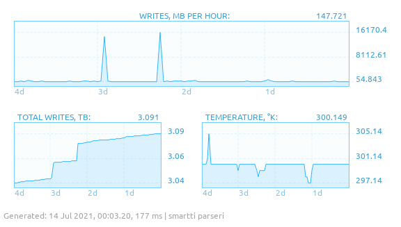

This document provides information about some of the software associated with the Tarpeeksi Hyvae Soft banner.
Binaries are currently unavailable. Source code is by and large open.
| Primary language | Software |
|---|---|
| C++ | 14 |
| JavaScript | 11 |
| C | 6 |
| Python | 2 |
| Assembly | 1 |
| Java | 1 |
| PHP | 1 |
| Primary category | Software |
|---|---|
| Rendering | 11 |
| User interface | 4 |
| Audio/video | 2 |
| Benchmark | 2 |
| Content management | 2 |
| Data converter | 2 |
| Typing | 2 |
| Database | 1 |
| File format | 1 |
| Machine learning | 1 |
| Modding | 1 |
| Patch | 1 |
| Simulation | 1 |
| Visualization | 1 |
| Uncategorized | 2 |
| Year | Software |
|---|---|
| 2021 | 1 |
| 2020 | 5 |
| 2019 | 11 |
| 2018 | 6 |
| 2017 | 4 |
| 2016 | 4 |
| 2015 | 2 |
| 2013 | 1 |
| 2010 | 1 |
| 2003 | 1 |
A useful capture tool for Datapath's VisionRGB range of capture cards. Features a variable output refresh rate, anti-tearing, highly configurable image filtering, video presets with activation by resolution, refresh rate and shortcut, and several other things that enable high-quality analog and digital capture for recreational and professional use.
VCS supports capturing in Windows (XP and later) and Linux (kernel 5). Since it also has a low reliance on GPU features, VCS is highly compatible with virtualization software (tested to run in QEMU, VMWare Player, and VirtualBox). Fully virtualized capture via PCI passthrough in QEMU (Linux host, Windows XP and 7 guest) from a Datapath VisionRGB-PRO has been confirmed working.
VCS introduces minimal latency to the capture chain. The full latency from a visual event triggering in the target system to it being captured by a Datapath VisionRGB device, uploaded into system memory for VCS, and displayed in VCS's output window is typically in single-digit milliseconds for common VGA resolutions.
The VCS architecture runs a central execution loop which calls on functionality provided by its subsystems to capture, manipulate, and display frames obtained from the capture device. The subsystems are self-contained and provide a public interface both for using the subsystem and replacing it with another implementation of the interface. For example, support for new capture devices can be added by replacing the implementation of the capture subsystem interface.
VCS comes with fully custom GUI styling made using Qt's CSS-like QSS language.
Includes an end-user's manual (GitHub Markdown) and developer documentation (Doxygen with custom theming).
Made in 2017–2021.
Links: GitHub • User's manual • Developer docs (work in progress)
| Vendor | Model |
|---|---|
| Datapath | VisionRGB-PRO1/-PRO2 |
| Datapath | VisionRGB-E1/-E2 |
| Datapath | VisionRGB-E1S/-E2S |
| Datapath | VisionRGB-X2 |
| Version | Release date |
|---|---|
| 2.0.0 | April 2020 |
| 1.0.0 | March 2018 |
| Initial release (beta.1) | April 2017 |
| Language | Files | Blank | Comment | Code |
|---|---|---|---|---|
| Sum | 225 | 4364 | 3340 | 18329 |
| C++ | 103 | 3006 | 1415 | 11688 |
| C/C++ Header | 109 | 1358 | 1925 | 3431 |
| Qt | 13 | 0 | 0 | 3210 |
A multi-platform asset-editing toolset for the cult DOS game Rally-Sport. This toolset lets you create and edit tracks, textures, and various other aspects of the game. To my knowledge, it's the only available modding tool for the game.
The browser version runs in modern browsers like Google Chrome. It dutifully reproduces Rally-Sport's unique 3D rendering style, with n-sided polygons, screen space texture-mapping, and one-point perspective. It integrates a browser version of DOSBox for playing custom content in-game in the browser, and provides WebRTC data streaming for easy sharing of your creations with friends.
The Windows version supports Windows 95 and up, is Wine-compatible, and provides 3D hardware rendering via OpenGL and Glide (with fallback software rendering available). The Windows version is currently deprecated in favor of the browser version.
The DOS version is written in 386 assembly. It includes the required loader program for playing custom content in Rally-Sport, as well as a clever AI opponent editor. This version used also to include track and texture editors, but they've been deprecated in favor of the browser version.
Made in 2016–2021.
Links: Run in browser • GitHub (frontend) • GitHub (backend)
| Version | Release date |
|---|---|
| Browser version 1.0 | December 2020 |
| First release of the browser version | November 2018 |
| First release of the Windows version | August 2018 |
| First release of the DOS version | April 2017 |
| Initial public release (Linux/Windows) | November 2016 |
| Language | Files | Blank | Comment | Code |
|---|---|---|---|---|
| Sum | 139 | 4583 | 4758 | 18116 |
| C++ | 39 | 1831 | 1200 | 7114 |
| JavaScript | 49 | 1525 | 1349 | 6272 |
| Assembly | 20 | 731 | 1946 | 3384 |
| C/C++ Header | 30 | 450 | 261 | 982 |
| CSS | 1 | 46 | 2 | 364 |
A web app for hobbyist birdwatchers to keep track of their sighted species in a visually engaging, slightly gamified way. Each sighting is represented as a card showing an image of the species along with the date of observation, while the total of observations made are presented as a list of these cards – usage of the program is then akin to card-collecting.
To make debugging and runtime error-reporting easier, as well as to improve the reliability of the program, Lintulista's JavaScript code enforces type checks with explicit runtime assertions, introduces underlying typing for custom objects via simple pseudo-inheritance, and provides a try/catch-wrapping action system that groups related commands toward a goal with the user-facing error messages associated with that goal's failure states.
Lintulista's backend is Heroku-compatible and makes an attempt to minimize the use of database rows – potentially useful for those on the limited Heroku Free plan. The backend provides unit tests, while the frontend implements React component tests.
The Lintulista repo comes with tooling to semi-automate the creation bird thumbnails from images on Wikimedia Commons.
Lintulista is for private use at this time, but a public sample is provided (see links, below).
Made in 2019/2021.
Links: View sample • GitHub (client) • GitHub (server)
| Language | Files | Blank | Comment | Code |
|---|---|---|---|---|
| Sum | 61 | 1163 | 860 | 5617 |
| JavaScript | 29 | 409 | 367 | 1951 |
| JSX | 20 | 399 | 423 | 1557 |
| CSS | 5 | 237 | 5 | 1556 |
| C++ | 3 | 75 | 30 | 242 |
| Qt | 1 | 0 | 0 | 203 |
| C/C++ Header | 2 | 30 | 13 | 59 |
| PHP | 1 | 13 | 22 | 49 |
A well-featured, retro-oriented 3D software renderer for the HTML5 canvas. Rasterizes n-sided polygons onto a given canvas – or, optionally, into an offscreen pixel buffer.
This renderer features retro aesthetics; reasonable performance (for lower-resolution rendering); vertex and pixel shaders; affine and screen space texture-mapping; rasterization of points, lines, and n-sided convex polygons; flat, per-vertex (Gouraud), and per-pixel (Phong) shading; alpha testing; stippled alpha blending; 16-bit (RGBA/5551) and 32-bit (RGBA/8888) textures; texture mip-mapping; clamped and repeating UV coordinates with support for negative coordinates; wireframe rendering; translation, rotation, and scaling of vertices; async rendering using Web Workers; Blender export; unit, integration, and performance tests; a streamlined API; docs; samples; and more.
The renderer has no external dependencies. It uses a plain Bash script to bundle its source files into a single-file distributable, which can be imported either globally or as an ES6 module.
Made in 2019–2021.
Links: GitHub • Render samples • User's manual • API reference • Benchmark (heavy) • Benchmark (light)
Rngon.render_async([mesh]).then(result=>
{
canvas.getContext('2d').putImageData(result.image, 0, 0);
});
// The renderer will call this function for each n-gon following the lighting
// and world-space transformation steps but prior to rasterization.
function pulsing_vertex_shader(ngon)
{
const timer = (performance.now() / 900);
const pulseMult = Math.abs(Math.sin(timer));
for (let v = 0; v < ngon.vertices.length; v++)
{
ngon.vertices[v].shade = Math.max(0.5, (pulseMult * v));
}
}
// The renderer will call this function once the current frame has been rasterized.
// The 'fragmentBuffer' property contains metadata about each pixel, like world-
// space coordinates and n-gon material properties.
function wavy_pixel_shader({renderWidth, renderHeight, fragmentBuffer, ngonCache, pixelBuffer})
{
const timer = (performance.now() / 300);
for (let y = 0; y < renderHeight; y++)
{
const horMagnitude = 7;
const verMagnitude = ((y / renderWidth) * 10);
const cos = (horMagnitude * Math.cos(timer + verMagnitude));
for (let x = 0; x < renderWidth; x++)
{
const dstIdx = (4 * (x + y * renderWidth));
const srcIdx = (4 * (Math.min((renderWidth - 1), (x + horMagnitude + ~~cos)) + y * renderWidth));
const fragment = fragmentBuffer[srcIdx / 4];
if (!ngonCache[fragment.ngonIdx].material.isWavy)
{
continue;
}
pixelBuffer[dstIdx + 0] = pixelBuffer[srcIdx + 0];
pixelBuffer[dstIdx + 1] = pixelBuffer[srcIdx + 1];
pixelBuffer[dstIdx + 2] = pixelBuffer[srcIdx + 2];
pixelBuffer[srcIdx + 0] = 255;
pixelBuffer[srcIdx + 1] = 255;
pixelBuffer[srcIdx + 2] = 255;
}
}
}
| Benchmark† | |||
|---|---|---|---|
| Browser* | Heavy | Light | Wireframe |
 Chrome 91
Chrome 91
|
6 | 156 | 251 |
 Firefox 89
Firefox 89
|
4 | 87 | 121 |
|
* Running in Linux on a quad-core Intel Haswell CPU.
† Values are frames per second (average of three runs). |
|||
| Version | Release date |
|---|---|
| First beta release | December 2019 |
| First alpha release | January 2019 |
| Language | Files | Blank | Comment | Code |
|---|---|---|---|---|
| Sum | 22 | 508 | 587 | 2375 |
| JavaScript | 20 | 485 | 527 | 2202 |
| PHP | 1 | 13 | 21 | 92 |
| Python | 1 | 10 | 39 | 81 |
A 3D front-end for the PC emulator PCem. PCbi replaces PCem's text-based user interface with a 3D scene in which you can assemble and run emulated computers.
Rather than clicking through plaintext menus to select which components an emulated PC should have, PCbi lets you stick components into a motherboard in a 3D view – making the assembly a more tangible, rewarding experience. Once the PC has been assembled, PCem can be made to run the emulation on its virtual screen.
PCbi uses shared memory in Linux and Windows to interface and exchange runtime data with PCem. The 3D renderer uses OpenGL for rasterization. A custom GUI styling has been implemented using Qt's HTML and CSS facilities. Tooling is provided for adding new hardware components.
Made in 2018–2021.
Links: Additional content • Dev playlist on YouTube
| Version | Release date |
|---|---|
| First non-beta (0.13.0) | May 2020 |
| Initial release (beta.1) | January 2018 |
| Language | Files | Blank | Comment | Code |
|---|---|---|---|---|
| Sum | 75 | 2125 | 1056 | 9007 |
| C++ | 32 | 1564 | 859 | 6317 |
| Qt | 4 | 14 | 0 | 1611 |
| C/C++ Header | 39 | 547 | 197 | 1079 |
Looks like an old browser, acts like an old browser - and almost is one. Serlain is a frontend for Internet Archive's Wayback Machine that displays archived web content inside period-correct-looking faux browsers, set on a faux period-themed desktop.
Made in 2019–2021.
Links: Run in browser • GitHub
| Language | Files | Blank | Comment | Code |
|---|---|---|---|---|
| Sum | 33 | 494 | 312 | 2277 |
| CSS | 14 | 170 | 0 | 1248 |
| JSX | 13 | 180 | 184 | 535 |
| JavaScript | 5 | 121 | 79 | 408 |
| PHP | 1 | 23 | 49 | 86 |
A platform for users of RallySportED to share and obtain custom content for Rally-Sport.
This platform provides both a back-end that stores RallySportED-made content (e.g. custom tracks) and a REST API through which clients can interact with the back-end, fetching and posting content. Also provided is a handy HTML view for accessing the API with a browser.
The implementation contains a custom MVC framework for creating views into the content; a modular HTML builder for generating pages for the HTML view; and an OOP resource system to support multiple types of content (e.g. tracks, cars) through a generic interface. Includes user accounts with registration, login, and password reset.
Temporarily unavailable live (due to changes in the host's tech stack, which I haven't had time to adapt this program for).
Made in 2020.
Links: GitHub
| Language | Files | Blank | Comment | Code |
|---|---|---|---|---|
| Sum | 103 | 1327 | 1610 | 5941 |
| PHP | 83 | 1198 | 1593 | 5056 |
| CSS | 19 | 126 | 8 | 864 |
| JavaScript | 1 | 3 | 9 | 21 |
Ever wanted a cloud physics simulator and renderer? Maybe not, but this app provides.
The program simulates the rising of moist air and the subsequent condensation of cloud-forming droplets as the air cools; then renders the resulting 3D droplet grid into a realistic image of clouds.
You can configure the simulator's atmospheric properties to your liking, including the environmental lapse rate and relative humidity curves. The GUI provides real-time visualization of the state of the simulation, showing the relative humidity, air temperature, and droplet distribution either as averages across the simulation grid or as horizontal or vertical slices.
The renderer uses volumetric path tracing and photon mapping to model in-cloud light transfer. Spectral Mie scattering is empirically approximated (by eyeballing MiePlot graphs), while the Hosek–Wilkie 2012 sky model is used to approximate Rayleigh scattering. Optionally, a HDR environment map can be used in place of the parametric sky model.
OpenCL is used to accelerate calculations of condensation (a square root and a multiplication or two per simulation grid cell, each cell being processable parallel to the others), while the renderer works on tiles distributed across the system's cores.
This program required a beefy computer. With a mid-to-low-range home PC of the time, running the simulation on a high-resolution grid (e.g. 300 × 300 × 300) could take hours, and the rendering would take several days to converge to a relatively noise-free outcome even at low render resolutions (e.g. 512 × 512).
Made in 2013–2014.
| Language | Files | Blank | Comment | Code |
|---|---|---|---|---|
| Sum | 75 | 6697 | 8262 | 24528 |
| C++ | 34 | 5402 | 7291 | 19650 |
| C/C++ Header | 34 | 1158 | 836 | 3718 |
| Qt | 4 | 2 | 0 | 777 |
| OpenCL | 3 | 135 | 135 | 383 |
Patches a bug/feature in Ultima 7 that forces the CPU cache on at launch.
Ultima 7 – like many programs of the time – will run too fast on PCs that are much newer than what the game was originally made for. A common workaround for this kind of problem is to soft-disable the CPU's cache, heavily reducing its performance and thus bringing it more in line with what the program expects.
Unfortunately, this workaround is no good for Ultima 7, because the game resets the cache-disabling CPU flag on launch. Bummer.
Luckily, this patch modifies the game executables so that they preserve the relevant CPU flag. As a result, the game can be run with the cache off.
Thanks to a member (whose name is unfortunately forgotten) of the VOGONS forum for discovering that the bug had to do with the game resetting CPU flags.
Made in 2017.
Links: GitHub
U7DCP - Ultima VII DOS Cache Patch.
Patching MAINMENU.EXE...
Patching ENDGAME.EXE...
The patching appears to have gone well.
; The game wants to enable protected mode as the first step in entering
; unreal mode. Normally, it assigns 1 to EBX, which sets the relevant
; first bit but also resets all the other bits (importantly, bit #30,
; for cache disable). Instead, we want to set only the first bit and
; leave the others untouched.
mov ebx, cr0
or bl, 1
mov cr0, ebx
; ...
; The game has entered unreal mode and is ready to disable protected
; mode. Again, we want to manipulate only the relevant first bit.
and bl, 0feh
mov cr0, ebx
| Language | Files | Blank | Comment | Code |
|---|---|---|---|---|
| Assembly | 3 | 54 | 147 | 321 |
My first path tracer. It served as a personal testbed in messing around with offline rendering.
This renderer featured photon mapping; spectral reflectance; volumetric rendering (subsurface scatter, clouds, snow); HDR environment mapping; ray–triangle intersection tests on the GPU; and various other things.
This renderer powered Cloud simulation.
Made in 2010–2014.
A vanilla JavaScript path tracer.
Features basic cosine-weighted Lambertian diffuse reflection, importing scenes from Blender, exporting renderings into PFM, continuing previous renderings from PFM, multi-threaded rendering with Web Workers, tone-mapping, a BVH tree to accelerate ray–triangle intersection tests, and a custom JSON scene file format.
Made in 2019–2020.
Links: Run live sample • GitHub
{
"camera":{
"position":{"x":0,"y":0,"z":1.745841},
"axisAngle":{"x":0,"y":1,"z":0,"w":0}
},
"sky":{
"model":"cie-overcast",
"zenithDirection":{"x":0,"y":1,"z":0}
},
"materials":{
"default":{
"type":"lambertian",
"color":{"r":0.1,"g":1,"b":0.1}
}
},
"triangles":[
{
"material":"default",
"vertices":[
{"position":{"x":-2.653676,"y":-2.627338,"z":-8.797296},"normal":null},
{"position":{"x":2.666877,"y":-2.627337,"z":-8.797296},"normal":null},
{"position":{"x":2.666877,"y":-2.627338,"z":-14.179447},"normal":null}
]
}
]
}
| Worker count* | Render performance (1000 samples/sec.) | |
|---|---|---|
| 1 | 41 | |
| 2 | 78 | |
| 3 | 100 | |
| 4 | 109 | |
| * In Chrome 91 on a quad-core Intel Haswell CPU. | ||
| Language | Files | Blank | Comment | Code |
|---|---|---|---|---|
| JavaScript | 20 | 377 | 489 | 1659 |
A documentation framework for creating end-user-oriented single-page docs. This website is made with it!
Dokki is currently work in progress.
Made in 2021.
Links: GitHub • API reference • Sample document
A streamlined, retro-oriented Win32 3D rasterizer API wrapper.
The idea behind Kelpo is to create an easy-to-use umbrella render API that exposes a minimal unifying feature set to cover as many 1990s 3D APIs/hardware as reasonably possible and producing generally the same output image regardless of which render platform is being used. (The 1990s, you may recall, saw a relative lack of 3D rendering standards and a wild west of video card feature-sets – see e.g. vintage3d.org for more info.)
Kelpo is work-in-progress (there's no hurry to complete it), and currently supports Direct3D 5, Direct3D 7, OpenGL 1.1, OpenGL 3.0, and Glide 3. Planned support includes the proprietary 3D APIs of Matrox, S3, and ATi.
Made in 2019–2020.
Links: GitHub
// Initialize Kelpo for OpenGL 1.1.
const struct kelpo_interface_s *kelpo = NULL;
kelpo_create_interface(&kelpo, ``opengl_1_1``);
// Open a 640 x 480 (16-bit) render window on video device #0.
kelpo->window.open(0, 640, 480, 16);
// Run the render loop.
while (kelpo->window.process_messages(),
!kelpo->window.is_closing())
{
kelpo->rasterizer.clear_frame();
kelpo->rasterizer.draw_triangles(&triangle, 1);
kelpo->window.flip_surface();
}
| Language | Files | Blank | Comment | Code |
|---|---|---|---|---|
| Sum | 71 | 1562 | 1108 | 5566 |
| C | 34 | 1217 | 553 | 4756 |
| C/C++ Header | 37 | 345 | 555 | 810 |
A binary file format for storing 3D models and their textures; a companion format for the Kelpo renderer. Designed with limitations of 1990s 3D hardware in mind.
A KAC file stores vertices, normals and UV coordinates in 32-bit floats. Texture data are stored in 16-bit color with transparency (RGBA4444); polygon colors are stored in 16 bits with alpha (RGBA5551). Textures are stored with mipmapping down to 1×1. Because a KAC file includes the model's entire set of textures, each texture is associated with a 128-bit SHA-256 pixel data hash to allow duplicate textures to be discarded when loading multiple KAC files.
An importer – for loading KAC meshes into C/C++ programs – and exporter – for converting OBJ models into KAC meshes – are provided. The exporter automatically generates texture mipmaps and converts pixels into 16-bit color.
Made in 2019–2020.
Links: Spec (1.0 draft) • GitHub
A HTML5 video player whose seek bar shows an expandable spectrogram of the video's audio. This is effectively a feature-optimized browser version of AV Scissors.
Samples the output of a <video> element using an AnalyserNode to produce a time-variant spectrum (audio spectrogram), then paints it onto a <canvas> on the video's seek bar.
This app was originally made for a friend who had a need for it, but it turned out their iPad was overly paranoid about letting the browser access videos on the system, and so they couldn't use this.
Made in 2020.
Links: Run in browser • GitHub
| Language | Files | Blank | Comment | Code |
|---|---|---|---|---|
| JavaScript | 4 | 51 | 73 | 230 |
A program to measure your typing speed in detail. Provides statistics like percentage of mis-presses for each key, breakdown of typing time per key, and other stats of that kind. Also has a cool custom GUI made with Qt.
Made in 2015.
| Language | Files | Blank | Comment | Code |
|---|---|---|---|---|
| Sum | 21 | 1009 | 408 | 4865 |
| C++ | 9 | 816 | 383 | 3107 |
| Qt | 4 | 0 | 0 | 1296 |
| C/C++ Header | 8 | 193 | 25 | 462 |
A hybrid voxel/polygon 3D software renderer that gets its inspiration from retro voxel/polygon games like Delta Force and Outcast.
The voxel renderer makes 2D heightmaps into 3D landscapes. It's effectively a ray tracer, tracing a ray through each pixel on the screen and sampling height values from the heightmap along the ray's path. The renderer has full six degrees of freedom, multi-threading, and bilinear interpolation.
The polygon renderer supports single-threaded scanline and barycentric rasterization. It uses the depth map generated by the voxel renderer to discard pixels occluded by the terrain.
Made in 2018–2021.
Links: GitHub
| Language | Files | Blank | Comment | Code |
|---|---|---|---|---|
| Sum | 36 | 595 | 442 | 2015 |
| C++ | 12 | 330 | 251 | 1182 |
| C/C++ Header | 24 | 265 | 191 | 833 |
My first learner project in React. Fetches weather forecasts from the Finnish Meteorological Institute's open data API and displays them as cards.
I developed Lintulista – my second project in React – right after this one.
Made in 2019.
Links: GitHub • Run in browser
| Language | Files | Blank | Comment | Code |
|---|---|---|---|---|
| Sum | 7 | 41 | 77 | 265 |
| JSX | 6 | 25 | 51 | 188 |
| JavaScript | 1 | 16 | 26 | 77 |
A set of command-line tools for converting data from the DAT files of Grand Prix Legends into more standard formats.
The tools can selectively extract files from DATs, convert MIPs and SRBs into PNG and 3DOs into OBJs. There's currently no option for inserting data back into a DAT, though.
I wrote these tools to help generate scenes for rendering with the retro n-gon renderer.
Made in 2019.
Links: GitHub
Exporting rouen.3do...
Exporting horiz.3do...
...
Exporting mbox.3do...
Exporting fenceb.3do...
Wrote 4304528 byte(s) in 331 file(s) matching wildcard pattern *.mip,*.3do
| Language | Files | Blank | Comment | Code |
|---|---|---|---|---|
| Sum | 19 | 598 | 420 | 2006 |
| C++ | 5 | 287 | 85 | 993 |
| PHP | 3 | 146 | 161 | 547 |
| C/C++ Header | 11 | 165 | 174 | 466 |
A cross-platform command-line tool to extract 3D models (into OBJ) and paletted textures (into PNG) from Tomb Raider 1's PHD files.
I wrote these tools to help generate scenes for rendering with the retro n-gon renderer.
Made in 2019–2020.
Links: GitHub
| Language | Files | Blank | Comment | Code |
|---|---|---|---|---|
| Sum | 3 | 229 | 158 | 987 |
| C | 1 | 157 | 105 | 657 |
| PHP | 2 | 72 | 53 | 330 |
An SVG wireframe renderer of arbitrary polygons for the HTML5 canvas. Includes polygon clipping and rotation, and a couple of interactive render samples.
This program is an offshoot of the Retro n-gon renderer, sharing much of its streamlined API style.
Made in 2020.
Links: GitHub • View interactive samples
| Language | Files | Blank | Comment | Code |
|---|---|---|---|---|
| JavaScript | 11 | 151 | 142 | 534 |
A learner project in Python; or in other words a PyQt app for viewing high-dynamic-range PFM images.
This app includes a custom PFM image loader and a porting from C to Python of Frédéric Drago's implementation of his 2003 tone-mapping algorithm.
Made in 2020.
Links: GitHub
| Language | Files | Blank | Comment | Code |
|---|---|---|---|---|
| Sum | 4 | 86 | 58 | 377 |
| Python | 3 | 86 | 58 | 223 |
| Qt | 1 | 0 | 0 | 154 |
A simple path tracer that can be compiled to run on the Game Boy Advance. Its code also compiles for desktop platforms. Since path tracing is very computationally expensive and slowray contains no optimizations to compensate, it runs extremely slow on the GBA's hardware.
Made in 2016, 2019.
Links: GitHub
| Language | Files | Blank | Comment | Code |
|---|---|---|---|---|
| C | 1 | 89 | 29 | 339 |
A transcription app with a minimalist UI, syntax error highlighting, and audio playback.
Made in 2018.
Links: GitHub (rewrite)
A Qt-based video player whose timeline highlights the parts of the video that contain movement or sounds. Useful for pet surveillance and that sort of thing. You may find that the program works well for some videos and less well for others; typically, a suitable recording has good image and audio quality with little background noise.
Made in 2018.
Links: GitHub
| Language | Files | Blank | Comment | Code |
|---|---|---|---|---|
| Sum | 20 | 496 | 371 | 1724 |
| C++ | 9 | 330 | 295 | 1270 |
| C/C++ Header | 10 | 166 | 76 | 332 |
| Qt | 1 | 0 | 0 | 122 |
My first project in JavaScript, after a decade or two of hobbyist C++. Renders spinning 3D cubes using three different techniques of rasterization.
I developed the browser version of RallySportED – my second project in JavaScript – right after this one. The basic render framework of this project was used as a starting point for the renderer in the browser version of RallySportED, which in turn was later forked to become the retro n-gon renderer.
Made in 2019.
Links: GitHub • Run in browser
| Language | Files | Blank | Comment | Code |
|---|---|---|---|---|
| JavaScript | 13 | 290 | 349 | 1232 |
A simple command-line tool that shows the current output rate (frames per second) of a Datapath VisionRGB capture card. Useful for e.g. estimating the card's maximun capture rate while excluding external factors like host CPU/GPU speed. Works with cards that implement the RGBEasy API.
Made in 2017.
Links: GitHub
FPS on channel #0: 70
FPS on channel #0: 70
FPS on channel #0: 70
...
| Language | Files | Blank | Comment | Code |
|---|---|---|---|---|
| C++ | 1 | 38 | 22 | 118 |
My first ray caster, from 2003. Its initial incarnation was based on Permadi's (then-)famous ray-casting tutorial.
The renderer evolved from a standard Wolfenstein-style 90-degree-walled caster into a heightmapped 2.5D voxel renderer, as I kept experimentally adding to it here and there.
In about 2005, I moved away from this project and into other kinds of programming. Eventually, after playing around with it some more in 2008–2009, I started working on my first ray tracer, which quickly evolved into Yqr.
Made in 2003–2005, 2008–2009.
Test your DOS era processor's floating-point performance with this grayscale path tracer that renders a scene of spheres and counts the number of seconds it took. A 486-66 will get it done in about six minutes, a Pentium 90 in 160 seconds or so, and the Xeon E3-1230 in less than one second.
Requires a math co-processor.
Made in 2017.
| Result (seconds) | CPU |
|---|---|
| 4 | AMD Athlon 64 X2 5050e |
| 7 | AMD Athlon XP 2200+ |
| 9 | Intel Celeron 2.4 |
| 37 | Intel Atom N270 |
| 47 | AMD K6-2 300 |
| 165 | Intel Pentium 90 |
An early webdev effort of mine. The goal was to re-design Gona's very useful but somewhat hard-to-read DOS video chip compatibility matrix (see link, below) for improved usability.
I harvested the matrix's HTML data, converted it into a JSON format, and implemented a front-end to provide a structured view to the data. The view shows the user an overall compatibility score for each video chip, lists the chips by most compatible to least compatible, and allows the user filter the results list by chip or manufacturer name.
Made in 2018.
Links: Original matrix
A 16-bit 3D rasterizer benchmark for recreational perf-testing of DOS-based C compilers. Compatible with a number of legacy C toolchains, such as from Microsoft, Borland, and HI-TECH.
The benchmark renders a spinning sphere in VGA mode 13h, then provides simple characteristics of its runtime performance.
Given the results (table, below), it seems that Microsoft's C/C++ compiler version 8 (as shipped with Visual C++ 1.5) is in a league of its own. At least when running the benchmark in DOSBox.
Made in 2018.
Links: GitHub
| Result (FPS) | Compiler |
|---|---|
| 57 | Microsoft C/C++ 8 |
| 41 | Digital Mars C/C++ 8 |
| 37 | Open Watcom C/C++ |
| 33 | Borland Turbo C 2 |
| 32 | Borland C++ 2 |
| 32 | Microsoft C 5 |
| 31 | Microsoft QuickC 1 |
| 30 | HI-TECH Pacific C 7 |
| 14 | Mix Power C 2 |
| Language | Files | Blank | Comment | Code |
|---|---|---|---|---|
| Sum | 19 | 302 | 213 | 1049 |
| C | 10 | 233 | 163 | 916 |
| C/C++ Header | 9 | 69 | 50 | 133 |
A simplified port of Vond and a learner project in Java. Provides a heightmap-based software voxel renderer with full degrees of camera rotation. Comes with a relatively extendable OOP codebase and some unit tests.
Made in 2019.
Links: GitHub
Heightmap passed its unit test.
Texture passed its unit test.
Vector3 passed its unit test.
Screen passed its unit test.
TerrainRenderer.render(): Time to render: 94 ms (11 FPS).
TerrainRenderer.render(): Time to render: 29 ms (35 FPS).
TerrainRenderer.render(): Time to render: 20 ms (50 FPS).
| Language | Files | Blank | Comment | Code |
|---|---|---|---|---|
| Java | 13 | 139 | 139 | 579 |
A learner project in Python by way of a simple ray tracer. Comes with a fairly clean, extendable OOP codebase. Uses PyQt to export the rendering into a PNG image.
Made in 2020.
Links: GitHub
| Language | Files | Blank | Comment | Code |
|---|---|---|---|---|
| Python | 10 | 148 | 51 | 394 |
A no-frills database and grapher for minimalist logging of sequential data.
The database, loosely termed, is a headerless binary file consisting of 12-byte time/value pairs: a 4-byte float that stores a value logged on an occasion, and an 8-byte int that records the time – in milliseconds since epoch ‐ of the occasion. The database provides a simple command-line interface for entering and fetching data.
The grapher produces no-nonsense visual readouts of data from databases.
This program was purposefully written to conform to feature minimalism: it has a small set of base features, enough to do the intended business, and is to receive no new features regardless of post-creation needs.
Made originally in 2016.
Links: GitHub
A utility to turn hard drive SMART logs (i.e. output dumps from smartctl) into nice little graphs.
Provides a configuration file with which the user can customize the generated imagery. Graphs can be arranged into customized rows and columns, and simple mathematical expressions can be given to modify the logged values for output (e.g. to convert Celsius → Kelvin).
The program uses Qt to draw the graphs and for exporting them into PNG image files.
Made in 2015.
# Attribute Graph size Graph X,Y Value Expression(s) C-Window Range Title
#---------------------------------------------------------------------------------------------------------
241 HALF 1,1 RAW a*0.000477 1 0 WRITES, MB PER HOUR
241 QUARTER 1,2 RAW a*0.000000477, a/1024 p300 0 TOTAL WRITES, TB
190 QUARTER 2,2 RAW a+273.15 0 0 TEMPERATURE, °K

A regular feed-forward neural net with customizable layering. Learns the MNIST digits to about 97%.
This program was written from scratch (without frameworks) as a learner project in machine learning.
Made in 2016.
Links: GitHub
Initializing for MNIST...
Net: Topology: N784-L10-S10
Learning rate: 0.010000
Training epochs: 3
Training on MNIST (60000/10000)...
Epoch 1 of 3: train = 68.947%, validate = 0.000%.
Epoch 2 of 3: train = 90.213%, validate = 90.300%.
Epoch 3 of 3: train = 91.570%, validate = 90.770%.
Training finished.
| Language | Files | Blank | Comment | Code |
|---|---|---|---|---|
| Sum | 13 | 316 | 217 | 1007 |
| C++ | 6 | 200 | 99 | 773 |
| C/C++ Header | 7 | 116 | 118 | 234 |